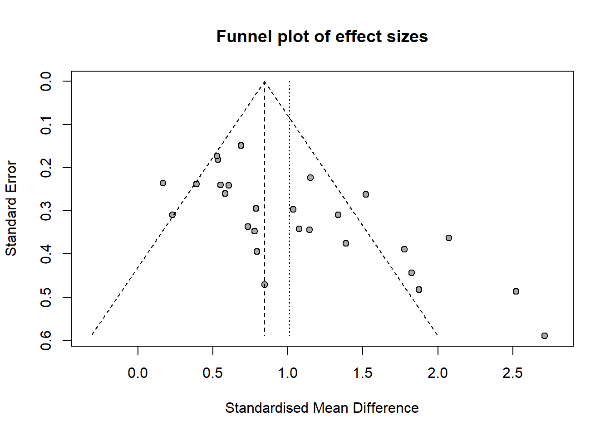
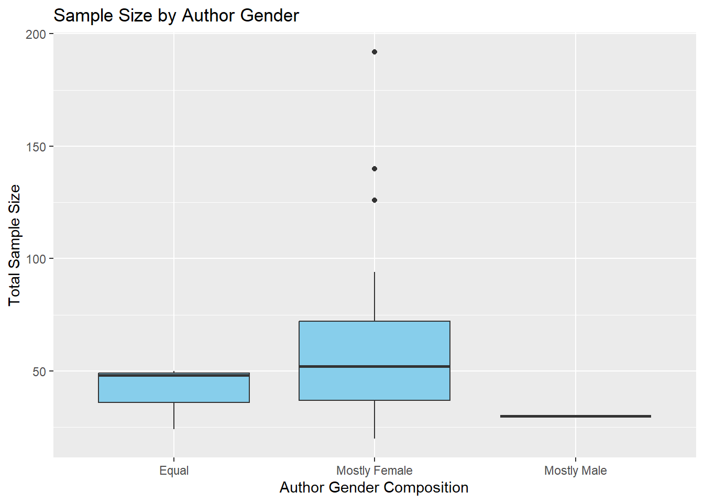
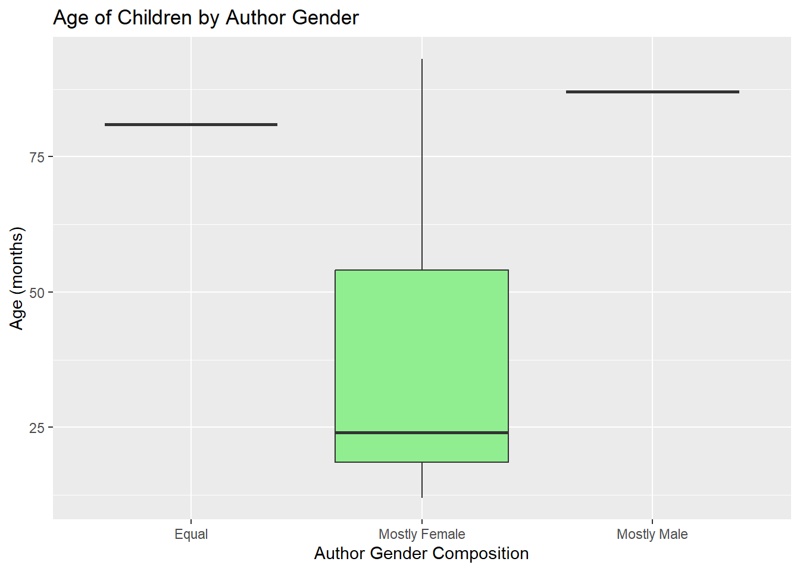

Warning: Use argument 'method.random.ci' instead of 'hakn' (deprecated).
```{r}funnel(m, main ="Funnel plot of effect sizes")```

Finding: Funnel plot for the meta-analysis showed a degree of asymmetry, with more points are on the right, which shows more studies reporting big effects. But the right side points have large standard error.
A meta-regression analysis was conducted to assess whether the study setting moderated the observed effect sizes. The intercept (representing Setting 1) was significant (b = 0.7934, p = 0.0036), indicating a moderate positive effect. However, neither Setting 2 (b = 0.2514, p = 0.4024) nor Setting 3 (b = 0.3983, p = 0.2847) differed significantly from Setting 1, suggesting that study setting did not significantly moderate the effect.
```{r}metareg(m, ~ Country)```
Warning: 1 study with NAs omitted from model fitting.
Mixed-Effects Model (k = 26; tau^2 estimator: REML)
tau^2 (estimated amount of residual heterogeneity): 0.2481 (SE = 0.1008)
tau (square root of estimated tau^2 value): 0.4981
I^2 (residual heterogeneity / unaccounted variability): 75.49%
H^2 (unaccounted variability / sampling variability): 4.08
R^2 (amount of heterogeneity accounted for): 0.00%
Test for Residual Heterogeneity:
QE(df = 24) = 81.7928, p-val < .0001
Test of Moderators (coefficient 2):
F(df1 = 1, df2 = 24) = 0.5405, p-val = 0.4693
Model Results:
estimate se tval df pval ci.lb ci.ub
intrcpt 1.2385 0.3594 3.4463 24 0.0021 0.4968 1.9802 **
Country -1.1688 1.5898 -0.7352 24 0.4693 -4.4501 2.1124
---
Signif. codes: 0 '***' 0.001 '**' 0.01 '*' 0.05 '.' 0.1 ' ' 1
This meta-regression was conducted to examine whether the country in which the study was conducted moderated the observed gender differences in toy preference. The intercept was significant (b = 1.2385, p = 0.0021), indicating a strong positive effect in the reference country. However, the effect size was not significantly moderated by gender inequality index (b = -1.1688, p = 0.4693), suggesting that toy preference differences were relatively consistent across countries with different gender inequality index included in this analysis.
Here I don’t know why shows there is no update,meta. So I didn’t put it in the code chunks.
m_gender <- update.meta(m, byvar = author_gender) forest(m_gender, main = “Effect by Author Gender”)
```{r}library(ggplot2)ggplot(Meta_Analysis_Data, aes(x = author_gender, y = N_boys + N_girls)) +geom_boxplot(fill ="skyblue") +labs(title ="Sample Size by Author Gender",x ="Author Gender Composition", y ="Total Sample Size")```

Teams with more female authors have the largest median sample sizes and Wide distribution and high volume of data, may prefer larger samples, may be better resourced or more intensively researched.
```{r}ggplot(Meta_Analysis_Data, aes(x = author_gender, y =`Age (months)`)) +geom_boxplot(fill ="lightgreen") +labs(title ="Age of Children by Author Gender",x ="Author Gender Composition", y ="Age (months)")```

Teams with more female authors had larger sample sizes, were more widely distributed, and had the smallest median age. This suggests that teams with more females tend to study younger children.